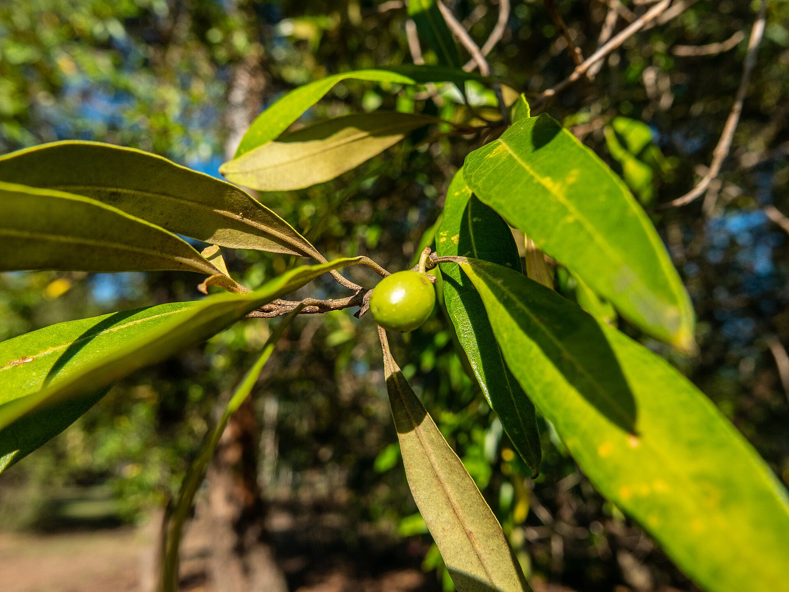

The Olive Grove Project
The Olive Grove ProjectHow Long Until an Olive Tree Bears Fruit? The Honest Timeline
By Anis Touati · October 5, 2026 · 6 min read
The direct answer: a grafted olive tree — the kind every nursery sells and every grove plants — typically bears its first small crop 3 to 5 years after planting. A tree grown from a seed takes 8 to 12 years, sometimes up to 15. Between those two numbers lies the single most important decision in olive growing, and the difference between a tree that feeds your patience and one that tests it.
Here is the whole timeline honestly — stage by stage, with the delays nobody warns you about, and what each year actually looks like in the field. It's also, not coincidentally, the timeline of every adopted tree in our grove.


Why grafting changes everything
An olive tree started from a cutting or a graft is a clone of a mature variety grafted onto hardy rootstock. It effectively skips childhood: the juvenile stage a seedling must grow through is already behind it, so the tree can move straight to building the framework that carries fruit. That single biological shortcut is why commercial groves — including ours — plant grafted stock almost exclusively.
A seed-grown tree, by contrast, spends its early years in a long juvenile phase: all leaves and branches, no flowers, no fruit. And when it finally matures, the fruit is a genetic lottery — it may resemble the parent olive, or not. Seed growing is a fine science experiment and a terrible business plan.
The timeline, stage by stage
| Years after planting | What the tree is doing | What you get |
|---|---|---|
| 1–2 | Root establishment, first framework branches | Growth, not fruit — and that's normal |
| 2–3 | First scattered flowers on grafted stock | A curious handful of olives, at best |
| 3–5 | Canopy fills out; flowering on last year's wood | First real crop on grafted trees |
| 5–7 | Deep root system, productive canopy | First meaningful harvests — enough to press |
| 8–10 | Mature structure | Steady full production begins |
| 8–15 | (seed-grown trees only) | First fruit finally arrives — the long way round |
| Decades+ | Full maturity | 15–40 kg of olives per season per tree |
Sources: horticultural references on olive propagation and fruiting (grafted trees 3–5 years; seedlings 8–15; meaningful harvests from years 5–7; mature yields 15–40 kg). Ranges vary by variety, climate and care.
Why the wait is longer than the label suggests
Three honest caveats from the field:
- "First fruit" ≠ "first harvest." A three-year-old grafted tree may hang a dozen olives on you. That's a promise, not a crop. Wait for years 5–7 before planning anything around the yield.
- Alternate bearing is real. Olive trees are biennial by nature: a heavy year is often followed by a lighter one. Pruning, irrigation and thinning smooth the rollercoaster; nothing erases it.
- You can delay fruiting yourself. Too much nitrogen fertilizer pushes a young tree into leaves at the expense of flowers — the most common beginner mistake in olive growing. Young trees want modest feeding, full sun, and drainage above almost everything.
What happens after the wait
Once production steadies, a well-managed mature tree yields in the range of 15–40 kg of olives per season — a few liters of oil per tree, with the harvest window falling between October and January depending on variety and latitude. Flowers appear on the previous season's growth and are wind-pollinated in late spring, which is why a single cold snap at the wrong week can quietly cost a season.
And the part no other fruit tree can match: the tree you plant in 2026 will still be producing in 2126. Many Mediterranean olives live 500–1,000 years; several famous specimens are believed past 2,000. The wait you're reading about is a rounding error in the life of the tree.
Growing one at home? Read our step-by-step guide on how to grow an olive tree in a pot.
Picked your first olives? See how to cure olives at home, or learn when to harvest olives for oil.
Frequently asked questions
How long does it take for an olive tree to bear fruit?
Grafted or cutting-grown trees — standard nursery stock — fruit in 3 to 5 years. Seed-grown trees take 8 to 15 years, with unpredictable fruit. This is why every serious grove plants grafted stock.
Do olive trees fruit every year?
Not evenly — they're alternate bearers. Expect a heavy year, then a lighter one, in a natural cycle. Management smooths it; nothing eliminates it.
How much fruit does a mature olive tree produce?
Roughly 15–40 kg of olives per season for a healthy, well-managed mature tree — a few liters of oil, with bigger crops every other year.
How long until my adopted olive tree fruits?
The grove plants grafted stock, so the honest clock reads: first modest crops around years 3–5, meaningful harvests from years 5–7. Your adoption certificate marks the planting date — the tree you fund this season starts that clock now.
Patience is the entire business model of olives — and always has been. If you want to start a tree's clock this season: $10 plants one seedling, with your name on the certificate and your donation verifiable on-chain. And while the trees grow, the same land grows the next phases of the farm →